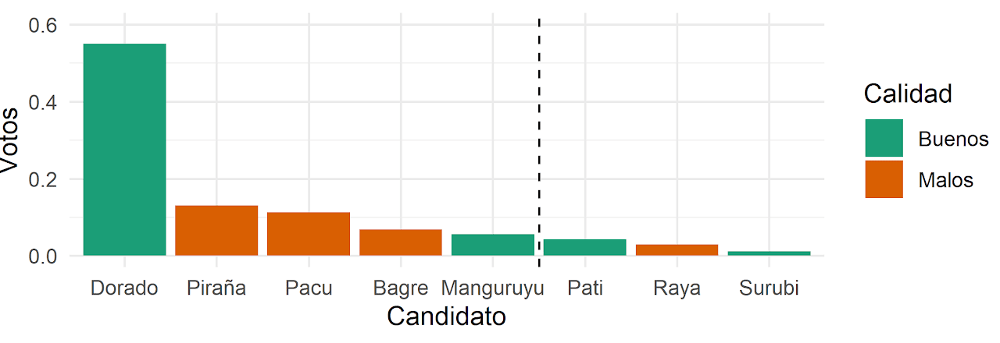
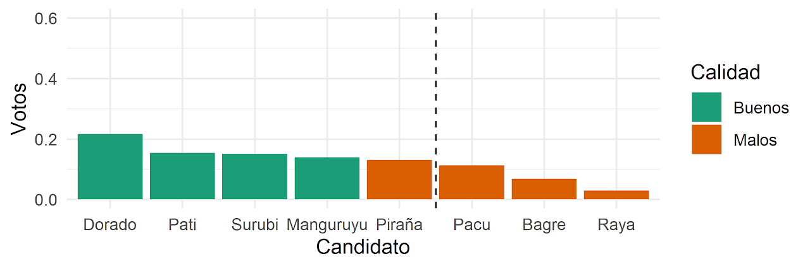
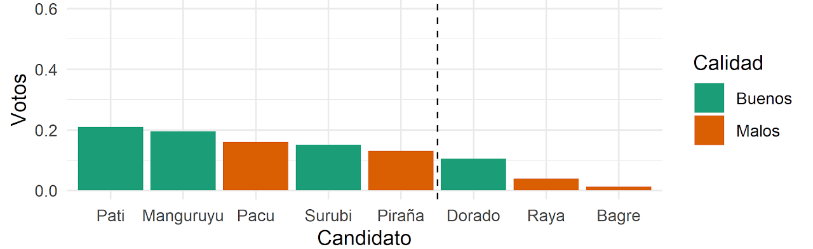

¿Cómo van a funcionar las listas abiertas en el Paraguay?
Cómo funcionan las listas cerradas pero desbloqueadas de la Ley 6318, el voto preferencial y el método D’Hondt en las municipales de 2021.
Las elecciones internas municipales a llevarse a cabo el 20 de Junio del 2021 serán las primeras elecciones en el Paraguay donde se usará el modo de votación de “listas abiertas”* en vez del sistema de “listas cerradas” que veníamos utilizando. La gran diferencia es que en vez de votar por una lista como un todo, los votantes van a tener la oportunidad de votar a individuos dentro de cada lista, y estos votos individuales van a poder cambiar el orden de las listas. Mucha gente celebró este avance como un cambio que empodera al ciudadano común. En vez de tener que aceptar la lista predeterminada por los partidos políticos, ahora la gente va a poder decidir, con su voto individual, quien entra y quien sale.
Pero también existen muchos argumentos en contra de las listas abiertas. Hay muchos estudios empíricos que sugieren que sistemas electorales que promueven la competencia intrapartidaria tienden a producir políticos menos programáticos y más particularistas (ver). Además, para que los ciudadanos puedan votar de manera coherente bajo un sistema de listas abiertas es necesario que estos ciudadanos estén extremadamente informados sobre la política, algo que es muy poco frecuente hasta en las democracias más avanzadas y educadas (ver). Finalmente, incrementar la competencia intrapartidaria también puede reducir la disciplina de los partidos políticos a la hora de legislar, haciendo que sea más difícil que los partidos políticos cumplan con las promesas que hacen a sus ciudadanos (ver).
Pero antes de poder discutir en detalle los pro y los contra de las listas abiertas en relación a las listas cerradas, en este post solo voy a estar explorando qué significa en términos prácticos la “lista abierta” según lo que se aprobó en la Ley 6318 que modifica el Código Electoral del Paraguay. Para eso hay dos fórmulas que tenemos que entender. La primera fórmula es la famosa D’hondt, que traduce el voto de la gente en la cantidad de escaños que debería recibir cada partido en un cuerpo colegiado (como una cámara legislativa, o una junta municipal o gubenamental, etc.). La segunda fórmula que tenemos que entender es la que se utiliza para crear el orden adentro de las listas según los votos preferenciales de los ciudadanos. La Ley 6318 reglamentó lo que se llama en ciencia política el Voto Único No Transferible para el reordenamiento de las listas, y como discutiré en este post, esta fórmula crea algunos problemas de coordinación que candidatos y ciudadanos van a tener que anticipar a la hora de votar.
La fórmula D’hondt
La mejor manera de explicar cómo funciona el D’hondt es utilizando un ejemplo. Imagínense, que el reino Animal, después de muchas reformas graduales, eventualmente se convirtió en una monarquía democrática. En las últimas elecciones legislativas, tres partidos se presentaron: el Partido Mamífero, el Partido de Pescados y el Partido de los Pájaros. Tras una gran campaña los Pescados salieron victoriosos, los Mamíferos salieron segundos, y a los pobres Pájaros no les fue tan bien y salieron terceros con la siguiente distribución de votos para cada partido:
| Partido | Porcentaje | Votos |
|---|---|---|
| Mamíferos | 37,94% | 1527 |
| Pescados | 44,67% | 1798 |
| Pájaros | 17,39% | 700 |
| Total | 100% | 4025 |
Asumamos también que el Congreso Animal sólo tiene diez (10) bancas—es un poder legislativo bastante pequeño—que tienen que ser distribuidas proporcionalmente entre los tres partidos según los votos que recibió cada uno. Si pudiésemos ser perfectamente proporcionales, los Mamíferos se llevarían 3,8 bancas, los pescados se llevarían 4,5 bancas y los Pájaros se llevarían 1,7 bancas. Lastimosamente, las bancas son indivisibles. El problema de la indivisibilidad de las bancas es lo que la fórmula D’hondt soluciona.
El funcionamiento del D’hondt es bastante simple. Lo único que se hace es se toma la cantidad de votos que recibió cada partido, y se divide por 1, 2, 3, 4, 5, 6, 7, etc. Una vez que se hizo esta división, como se muestra en la tabla de abajo, se eligen los números más altos hasta llegar a la cantidad de bancas que tiene una cámara legislativa. En el ejemplo de abajo, el número más grande es 1798, entonces Pescados recibe una banca, después viene 1527 entonces Mamíferos reciben otra banca, después viene 899 entonces Pescados reciben otra banca, después viene 763 entonces Mamíferos reciben otra banca y así sucesivamente. Al final la fórmula D’hondt entonces daría 5 bancas a los Pescados, 4 a los Mamíferos y 1 a los Pájaros.
| Partido | ÷1 | ÷2 | ÷3 | ÷4 | ÷5 | ÷6 | ÷7 | ÷8 | Bancas |
|---|---|---|---|---|---|---|---|---|---|
| Mamíferos | 1527 | 763,5 | 509 | 381,8 | 305,4 | 254,5 | 218,1 | 190,9 | 4 |
| Pescados | 1798 | 899 | 599,3 | 449,5 | 359,6 | 299,7 | 256,9 | 224,8 | 5 |
| Pájaros | 700 | 350 | 233,3 | 175 | 140 | 116,7 | 100 | 87,5 | 1 |
Lo importante que se tiene que notar sobre el D’hondt, es que esta fórmula favorece a los partidos más grandes. Si se mira al partido de los Pájaros podemos ver que a pesar de que el partido recibió casi el 20% de los votos, sólo recibió el 10% de las bancas, mientras que el partido de los Pescados recibió el 50% de las bancas y sólo obtuvo el 44% de los votos.
Para hacer un contraste, abajo muestro los mismos resultados calculados utilizando la fórmula St. Laguë. La fórmula St. Laguë es muy parecida a la D’hondt solo que en vez de dividir por 1,2,3,4, etc. el St. Laguë divide por 1,3,5,7,9, etc. Implementando ese cambio, y seleccionando los números más altos igual que como hicimos anteriormente, abajo podemos ver que los resultados del St. Laguë benefician un poco más al partido pequeño de los Pájaros. Con esta fórmula los Pescados recibirían 4 bancas, los Mamíferos recibirían 4 bancas y los Pescados 2.
| Partido | ÷1 | ÷3 | ÷5 | ÷7 | ÷9 | ÷11 | ÷13 | ÷15 | Bancas |
|---|---|---|---|---|---|---|---|---|---|
| Mamíferos | 1527 | 509 | 305,4 | 218,1 | 169,7 | 138,8 | 117,5 | 101,8 | 4 |
| Pescados | 1798 | 599,3 | 359,6 | 256,9 | 199,8 | 163,5 | 138,3 | 119,9 | 4 |
| Pájaros | 700 | 233,3 | 140 | 100 | 77,8 | 63,6 | 53,8 | 46,7 | 2 |
Habiendo dicho eso, la Ley 6318 mantuvo la fórmula D’hondt. El cambio a listas abiertas no afecta la cantidad de escaños que recibe cada partido, sino que afecta quiénes, dentro del partido, recibe cada escaño. Pero las listas abiertas sí podrían modificar cómo los Pájaros deciden competir electoralmente. Es decir, si el D’hondt favorece a los partidos grandes, y las listas abiertas permiten el reordenamiento de las listas de los partidos grandes, lo estratégico para los Pájaros sería correr adentro de uno de los dos partidos grandes como una corriente interna, y después utilizar el voto personal de estas listas para remediar la disproporcionalidad que la fórmula D’hondt crea para los partidos pequeños. En otras palabras, si los Pájaros corren como movimiento interno de los Mamíferos, los Pájaros tienen la oportunidad de conseguir dos escaños en vez de uno.
Habiendo dicho eso, el beneficio de las listas abiertas para las corrientes internas depende de la fórmula que se utiliza para reordenar las listas. La ley 6318 adoptó el Voto Único No Transferible como fórmula de ordenamiento de las listas. A continuación discuto cómo esta regla va a influenciar la manera que se comportan las corrientes internas de los partidos a la hora de competir electoralmente.
Voto Único No Transferible (VUNT)
Como vimos en la sección anterior, después de la aplicación del método D’hondt el partido de los Pescados recibió cinco escaños. Anteriormente, bajo el sistema de las listas cerradas, el orden de candidatos seleccionados para ocupar los escaños que corresponden al partido es establecido por el partido—y no por los votantes. Un ejemplo de la lista cerrada de los Pescados podría ser así:
| Orden | Candidato | Calidad |
|---|---|---|
| 1 | Piraña | Malo |
| 2 | Surubí | Bueno |
| 3 | Pacú | Malo |
| 4 | Manguruyú | Bueno |
| 5 | Bagre | Malo |
| 6 | Patí | Bueno |
| 7 | Raya | Malo |
| 8 | Dorado | Bueno |
El problema de las listas cerradas es que los votantes no tienen capacidad de influenciar el orden de las listas. Digamos por ejemplo que alguien quiere votar por la lista de los Pescados, pero hay una corriente interna que no le gusta (llamémosle simplísticamente los “malos”) y hay otra corriente interna del partido que sí le gusta (llamémosle simplísticamente los “buenos”). En este caso al votar por los Pescados un ciudadano tendría que votar por ambas corrientes sin importar que una corriente le gusta y otra no. En este ejemplo, entonces, los Pescados recibieron cinco escaños, y sin modificar el orden de la lista entrarían tres Malos y solo dos Buenos. Otro problema es que algunos candidatos que son extremadamente populares pueden atraer a votantes a la lista pero después no ser elegidos por el sistema proporcional. En nuestro ejemplo, digamos que el Dorado es extremadamente popular, pero como esta número 8 en la lista no fue elegido—sin importar lo que quieren los ciudadanos en general.
El Voto Único No Transferible (VUNT) intenta solucionar este problema dándole a los votantes un voto preferencial que pueden dar a cualquier candidato adentro de la lista. Imaginemos que los Buenos, entonces, reciben el 66% de los votos del partido y los malos solo reciben el 34% del voto del partido. Asumiendo que los ciudadanos votan de esa manera, tal vez esperaríamos que el VUNT nos de un resultado donde tres Buenos son electos y solo dos Malos son electos del partido Pescado, ya que esto mantendría la proporcionalidad de los resultados relativo a los votos de los ciudadanos.
Pero como veremos, el VUNT no siempre mantiene la proporcionalidad porque los resultados que arroja el VUNT depende de cómo estan distribuidos los votos de los ciudadanos. Por ejemplo, como dijimos que el Dorado es un candidato muy popular, es posible que el Dorado capture la mayoría de los votos de la corriente de los Buenos. Si todos los votantes de los Buenos concentran sus votos en el Dorado, pero los Malos votan por sus candidatos de una manera más equitativa, es muy posible que ocurra el escenario de abajo. En este gráfico se muestra cómo es posible que, a pesar de que los Buenos recibieron más votos que los Malos, los Buenos sólo recibirían dos escaños y los Malos recibirían tres.

Para evitar que esto suceda, el Dorado, los demás miembros de los Buenos pueden coordinar con los votantes para intentar que no todos los votantes voten solo por el Dorado, sino que distribuyan sus votos más equitativamente entre todos los miembros de la corriente de los Buenos. Por ejemplo los partidos podrían hacer una aplicación en el celular que aleatoriamente elige a uno de los miembros de los Buenos para cada ciudadano antes de votar, o se puede pedir que los votantes elijan a tal o cual candidato según la tercera letra de su primer nombre, o la fecha de su cumpleaños, etc. Cualquier forma que los movimientos internos puedan organizar a sus votantes para que no concentren sus votos en un solo candidato podría traer mucho beneficio a la corriente interna. Por ejemplo, sin cambiar los totales de cada movimiento, si solo reordenamos los votos preferenciales de los Buenos para que estén distribuidos equitativamente entre los candidatos, los Buenos pueden lograr que cuatro Buenos y solo un Malo sean electos, a pesar de que recibieron el 60% de los votos.

El problema para la corriente de Buenos es que el Dorado tiene que tomar un riesgo muy grande al pedir que sus votantes distribuyan sus votos entre todos los candidatos de la corriente. En el último ejemplo presentado abajo los Buenos reciben tres escaños y los malos solo dos, pero el más popular de los Buenos, el Dorado, queda afuera porque los votantes se equivocaron y no votaron lo suficiente por él. Este último ejemplo demuestra lo difícil que podría llegar a ser la coordinación entre los mismos candidatos de una corriente interna, ya que lo que es bueno para el grupo no necesariamente es bueno para cada uno de los candidatos dentro del grupo.

Conclusiones
El propósito principal de este post era mostrar cómo el problema de coordinación entre los políticos y los votantes que crea el Voto Único No Transferible (VUNT). En futuros posts puedo discutir más a fondo las posibles alternativas al Voto Único No Transferible (VUNT). Por ejemplo, en Irlanda se utiliza una fórmula llamada el Voto Único Transferible (VUT) donde la necesidad de coordinación entre los votantes y los candidatos es menor, pero la fórmula del VUT es considerablemente más compleja que la del VUNT y a veces también puede producir resultados poco intuitivos. Pero como falta muy poco para las municipales, lo más probable es que no haya ninguna modificación al Código Electoral antes de entonces. Como es seguro que vamos a estar utilizando el VUNT en las próximas elecciones, es importante que todos entendamos exactamente cómo funcionaría este sistema en la práctica, y cuáles son sus efectos y limitaciones.
La primera conclusión de este post es que un efecto de haber adoptado las listas abiertas es que en el futuro probablemente tendremos menos partidos políticos. La posibilidad de reordenar las listas de los partidos grandes, combinados con la fórmula D’hondt que premia a los partidos más grandes, crea incentivos para que partidos pequeños prefieran volverse corrientes internas de los partidos más grandes. De esa manera esquivan las disproporcionalidades que crea el D’hondt para los partidos pequeños, y tienen la capacidad de recuperan escaños a través del voto preferencial dentro de los partidos grandes—escaños que certeramente hubiesen perdido si corrían como partidos pequeños independientes.
La segunda conclusión de este post es que la coordinación entre los candidatos y los votantes va a ser de suma importancia para que el VUNT funcione adecuadamente. La necesidad de coordinar con sus votantes va a ser especialmente importante para los partidos políticos que 1) son grandes y 2) tienen corrientes internas que compiten entre sí. Las corrientes internas de partidos grandes que tienen la capacidad de hacer que sus votantes voten de una manera coordinada y bien distribuida, van a ser los mayores beneficiados del nuevo sistema. Las corrientes internas de los partidos grandes que concentran sus votos en un solo candidato, van a salir perdiendo.